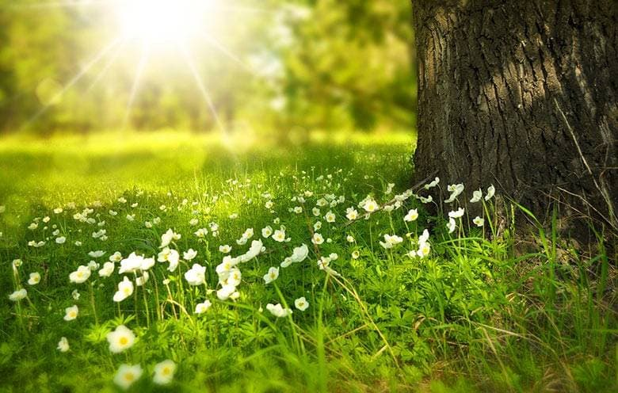

Цікаві факти про пори року

Весна
- Найпершою, навесні, зацвітає японська сакура (вишня).
- Навесні діти ростуть утричі швидше, ніж із серпня по грудень.
- Весною бджоли більш дружелюбні, ніж в інші періоди.
Літо
- Влітку в людини підвищується віра у власні можливості.
-
Фізичні тренування в жарку погоду дають змогу худнути значно швидше,
ніж взимку.
-
Ейфелева вежа через розширення заліза під сонячними променями
збільшується в розмірі й підростає приблизно на 15 см.
Осінь
- На екваторі осені не буває зовсім.
- В багатьох людей притупляється почуття страху.
- Восени завжди різко зростає число ДТП.
Зима
- Третина людей на Землі ніколи не бачили снігу
-
Сніжинки завжди відрізняються один від одного і здатні співати
-
Бурульки в середніх широтах виростають найбільшими з південної
сторони будинку.